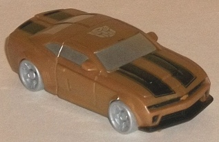
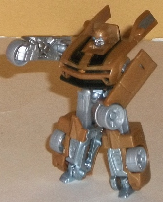
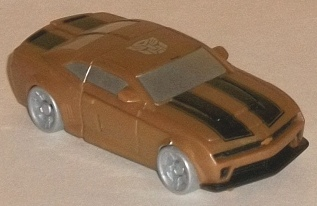
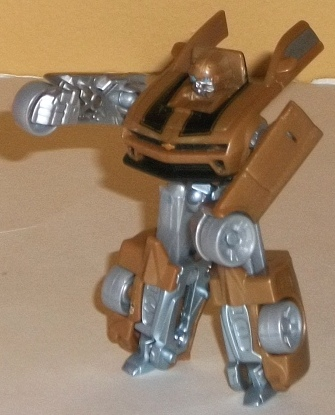
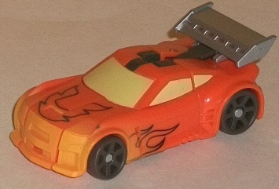
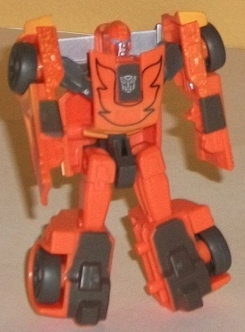
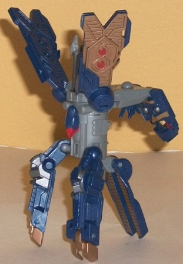
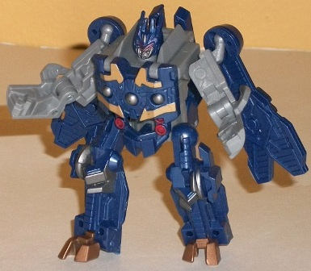

 
Allegiance : Autobot
Size : Legion
Difficulty of Transformation : Very Easy
Color Scheme : Swirly dull metallic gold, silver, and some black, light blue, metallic bronze, and light milky silvery gray
Individual Rating : 7.9
 Bumblebee
& Rodimus vs. Soundwave [DotM] (Wal-Mart Exclusive)
Bumblebee
& Rodimus vs. Soundwave [DotM] (Wal-Mart Exclusive)
Set Price
: $10 U.S.
Overall Rating
: 7.1
(NOTE: Because this set is composed of repaints,
this is not a full-blown review. This mainly covers any changes made to
the set and the color scheme, and merely compares it to the original versions
of these molds. For a review on RotF Legends Bumblebee, go
here
.
For a review on Universe 2.0 Legends Rodimus, go
here
.
For a review on RotF Legends Soundwave, go
here
.)
 Bumblebee
Bumblebee


Allegiance
: Autobot
Size
: Legion
Difficulty of Transformation
: Very
Easy
Color Scheme
: Swirly dull metallic
gold, silver, and some black, light blue, metallic bronze, and light milky
silvery gray
Individual Rating
: 7.9
Yes, yes, I know, another
movie Bumblebee redeco. But hear me out before you dismiss this one-- this
one really does look like a "premium" version of Bumblebee. His GENERAL
color scheme is still intact, with most of the same paint apps (such as
the stripes in vehicle mode) there, but his yellow has been replaced with
a rather striking shade of dull gold. Meanwhile, nearly all of his "robot
parts" have been painted silver (along with his windows), with a few remaining
bits of plastic (such as his wheels) being such a silvery shade that it's
almost indistinguishable from the paint itself. A few minor accents-- such
as the light blue eyes and the copper Chevrolet symbol on his car mode--
help to give slightly more variety to the color scheme. The amount of paint
apps he has really is quite generous-- the only things really "missing"
are his taillights being painted, but with so much of his robot mode being
silver it's easy to overlook this. These colors go together extremely well,
making Bumblebee look almost like he walked out of a bling convention.
It really does look quite great for such a small toy, even if I wish they
had used the better
DotM mold
of Legion/Legends
Bumblebee as opposed to this version.
No mold changes have
been made to this release of Bumblebee.
 Rodimus
Rodimus


Allegiance
: Autobot
Size
: Legion
Difficulty of Transformation
: Very
Easy
Color Scheme
: Moderately light orange,
dull dark brown, and some silver, pale yellowish white, pale orangish yellow,
and light sky blue
Individual Rating
: 7.3
Rodimus is the "bonus"
figure in this 3-pack (which, considering the price, he really is free),
and he's the odd 'bot out-- obviously not being from a Movie line, and
not being mentioned either via the bio or via tech specs. Ignoring how
well or not he fits in with a movie line release, this redeco of Rodimus
goes for a lighter, more orangey side of the flame spectrum, compared to
the original's red. It generally looks good, particularly in vehicle mode--
and he does have the trademark flames on the chest and sides, though they're
black outlines this time. The two different shades of pale yellow used
on his windows and as a spray app on the front side of his vehicle mode
are my favorite parts about Rodimus' new color scheme-- the way the yellow
fades onto the front makes it look like he's "heating up", and the pale
yellow windows go with the orange exceedingly well. The silver spoiler
is also a nice, different touch for the character. That said, I'm not fond
of the dark dull brown-- I get what they were going for (ash), but it looks
a bit too dirty in robot mode and doesn't look quite right as the plastic
color for his wheels. If it were a bit less prevalent, I'd probably like
it a bit more. I also don't like how underdetailed certain aspects of the
mold are, such as his front bumper and headlights-- they, along with his
flame "outline" apps, could've used a bit more detail alongside them to
help the robot mode look a bit less boring.
No mold changes have
been made to this release of Rodimus.
Soundwave


Allegiance
: Decepticon
Size
: Legion
Difficulty of Transformation
: Very
Easy
Color Scheme
: Moderately light gray,
dark blue, pale metallic bronze, and some metallic gunmetal gray and red
Individual Rating
: 5.9
For this 3-pack Soundwave
keeps his satellite mode from his RotF release, with his color scheme hearkening
back to the
Infiltrator Soundwave
redeco
from that line, albeit with less red. This color scheme takes its cues
from G1, taking yet another gray movie color scheme and adding a bit more
color to it with a good amount of dark blue. A healthy dose of metallic
bronze on the robot mode bits and wings really helps to complete the color
scheme, and all colors mesh nicely with each other. The couple of red and
metallic gunmetal gray paint apps serve as nice accent colors, too, and
keep him from looking one-tone in any large area. I wish he had a bit less
gray simply because his other releases have it as their main color, but
at least it's only used on the "core parts" of the satellite mode, where
it makes the most sense.
No mold changes have
been made to this release of Soundwave.
This Wal-Mart exclusive 3-pack is a no-brainer pick-up for those who like Legion/Legends class toys, particularly if you don't have all three of these molds. All three of them have good-to-excellent color schemes, and two of them are pretty good molds for the size class. Even the one who's not (Soundwave) at least has a good robot mode. Top this off with the fact that you're getting one for free, and this is a definite recommendation.
Reviews by Beastbot